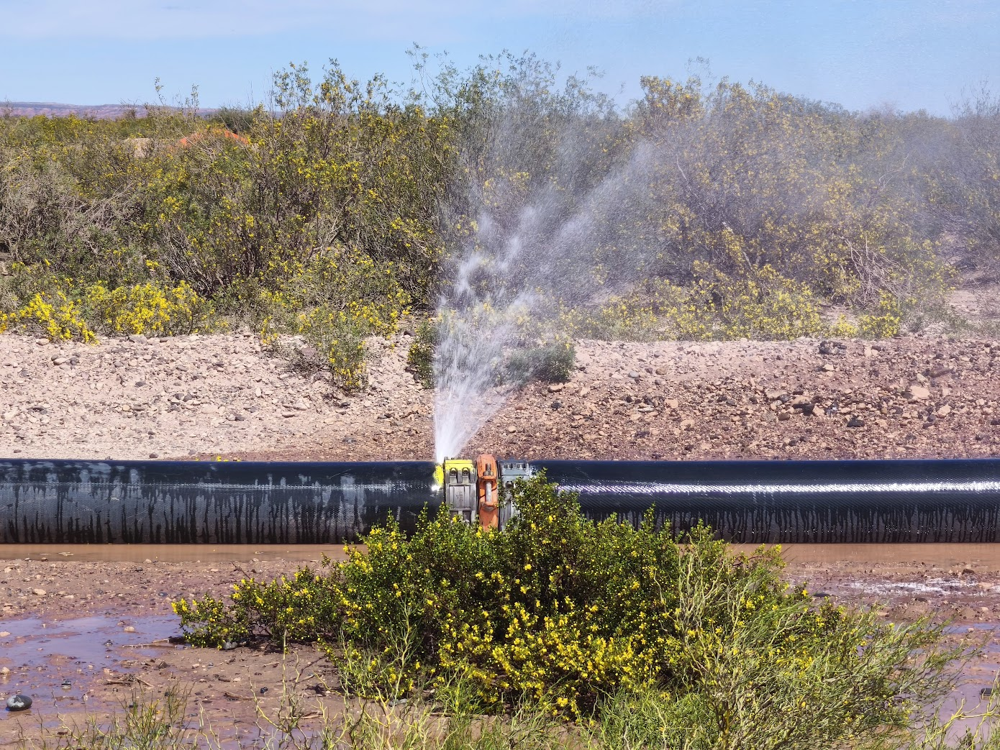
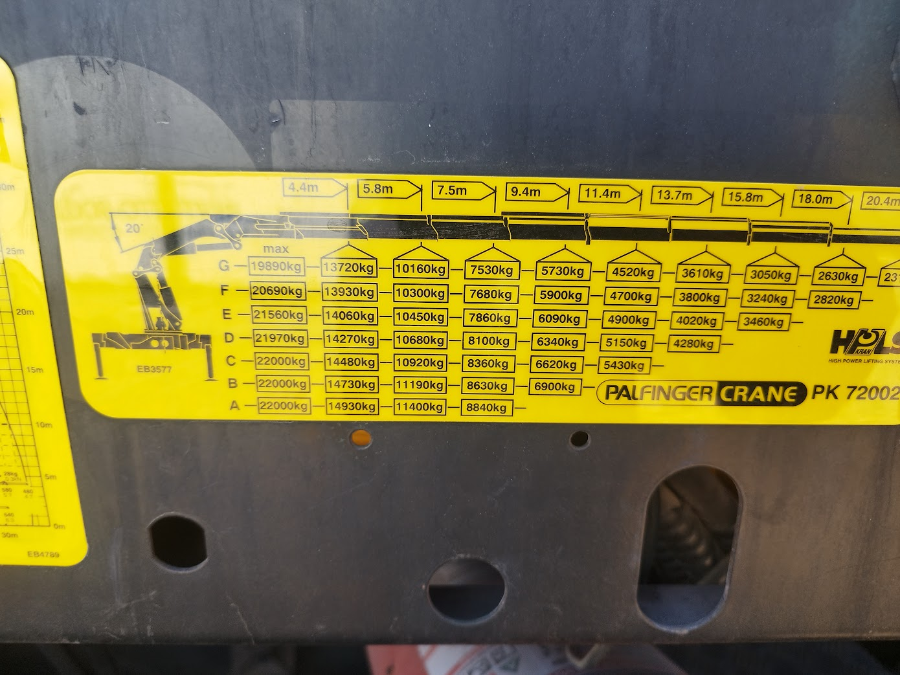

Recursos Pedagógicos para el Dictado y Certificación de Supervisores
Kit docente integral para directores de operaciones, coordinadores de campo, instructores técnicos y supervisores senior de la Cuenca Neuquina. Diseñado para articular la rigurosidad pedagógica del programa de formación con la exigencia operativa real de las locaciones no convencionales de Vaca Muerta en 11 especialidades clave: Fractura, Coiled Tubing, Wireline, Snubbing, Well Testing, Cementación, Flowback, UAF, Torqueo, Water Transfer y Logística de Arenas/Insumos.
A. Modalidades de Dictado y Carga Horaria (40h vs 60h)
El programa se encuentra estandarizado en dos formatos para adecuarse a los calendarios de rotación (14x14, 7x7) de las compañías operadoras y de servicios en Añelo, Rincón de los Sauces, Plaza Huincul y Neuquén Capital.
Matriz Comparativa de Modalidades de Capacitación
ESTRUCTURA PEDAGÓGICA| Parámetro | Modalidad A: Intensiva Ejecutiva (40 Horas) | Modalidad B: Integral Avanzada de Campo (60 Horas) |
|---|---|---|
| Público Destinatario | Supervisores en ejercicio, jefes de turno y personal técnico senior que requiere homologación de estándares en Vaca Muerta. | Operadores postulantes a supervisor, técnicos de reciente ingreso a la cuenca o cuadrillas en plan de profesionalización integral. |
| Carga Horaria Total | 40 horas reloj (32h sincrónicas + 8h evaluación interactiva y defensa de caso). | 60 horas reloj (44h sincrónicas + 12h talleres prácticos de campo/simulación + 4h examen final). |
| Estructura Temporal | 5 semanas (2 clases semanales de 4 horas cada una). Compatible con rotaciones 14x14 en descanso o base. | 7.5 semanas (2 clases semanales de 4 horas) + 1 jornada técnica de campo/simulador de 8 horas. |
| Alcance de Servicios | Enfoque central en las 5 operaciones críticas (Fractura, Coiled Tubing, Wireline, Well Testing y Water Transfer) + SIMOPS troncal. | Cobertura exhaustiva de los 11 servicios de soporte y completación, incluyendo UAF, Cementación, Torqueo y Logística pesada. |
| Talleres Prácticos | Simulación de roles (relevo de guardia, confección de PTS y parada por Zonda con anemómetro). | Talleres en simulador de presiones, inspección física de líneas, montaje LOTO en manifolds y negociación con superficiarios. |
| Requisito de Certificación | Aprobación de los 4 Tests de Nivel (mín. 70%) + Aprobación del Simulador Global (mín. 80%) + Resolución de 1 Caso Crítico. | Aprobación de los 4 Tests de Nivel + Simulador Global (mín. 80%) + Defensa oral de Caso Complejo ante jurado técnico. |
B. Cronograma Modular de Dictado (15 Módulos Estandarizados)
La modalidad intensiva cubre los módulos 1 al 10 en forma concentrada; la modalidad integral abarca los 15 módulos con sus respectivos entregables y simulaciones.
Desarrollo Módulo a Módulo · Programa Modular de Supervisión
15 MÓDULOS TEMÁTICOS| Mód. | Nivel | Temática Operativa Multi-Servicio | Taller Práctico / Simulación Aplicada | Entregable Requerido |
|---|---|---|---|---|
| 1 | Nivel 1 | Marco legal neuquino (Leyes 26.197, 17.319, 1875) y rol del supervisor en pad no convencional. | Análisis de responsabilidades civiles y penales ante accidentes operativos. | Ficha de cumplimiento normativo por servicio. |
| 2 | Nivel 1 | Confidencialidad, secreto industrial, NDAs y políticas de registro fotográfico en locación. | Dilemas éticos: divulgación de datos de producción y presiones en redes sociales. | Acta de compromiso de confidencialidad y ética. |
| 3 | Nivel 1 | Matriz de EPP por especialidad (Fractura, Coiled Tubing, Wireline, Water Transfer) y señalética IRAM. | Auditoría cruzada de locación: detección de desvíos en EPP crítico (caretas, guantes anti-impacto, H2S). | Checklist de ingreso a locación (Access Gate). |
| 4 | Nivel 1 | Procedimientos de Trabajo Seguro (PTS), Matriz RAM y Permisos de Trabajo (Frío / Caliente / Confinado). | Confección guiada de PTS para purga de línea a 150 PSI y montaje de colector de alta presión. | Permiso de Trabajo Seguro (PTW) firmado y auditado. |
| 5 | Nivel 1 | Comunicación operativa VHF, código fonético, colación de órdenes y Stop Work Authority (SWA). | Role-playing de comunicación en maniobra de punzado de pozo con radio-silencio estricto. | Guion estandarizado de colación de radio VHF. |
| 6 | Nivel 2 | Selección de personal de cuadrilla, evaluación de perfiles y factores psicosociales en régimen 14x14. | Dinámica de conformación de equipo ante 8 candidatos para turno nocturno de flowback. | Organigrama funcional de guardia y matriz de competencias. |
| 7 | Nivel 2 | Procedimiento estandarizado de Relevo de Turno (Shift Handover) y libro de novedades digital. | Simulación de pase de guardia con 3 fallas mecánicas ocultas en bombas y manifolds. | Acta formal de Relevo de Guardia 100% completada. |
| 8 | Nivel 2 | Protocolo LOTO (Bloqueo y Etiquetado): las 6 etapas de desenergización en bombas, motores y pozos. | Práctica de colocación de candados, aldabas y tarjetas en manifold de fractura y booster. | Planilla de aislamiento de energía cero verificada. |
| 9 | Nivel 2 | Supervisión distribuida en locación y trazas: hojas de ruta, telemetría SCADA y KPIs SMART. | Monitoreo en tablero SCADA: interpretación de caídas súbitas de presión y desbalance de caudal. | Tablero de control de KPIs del turno (NPT < 2%). |
| 10 | Nivel 2 | Investigación de fallas operativas e incidentes: Metodología de los 5 Porqués y Árbol de Causas. | Caso real de rotura de racord de 12" a 8 bar: deducción de causa raíz y acciones correctivas. | Informe de Investigación de Incidente con 5 Porqués. |
| 11 | Nivel 3 | Riesgos climáticos de la Patagonia: Viento Zonda, tormentas eléctricas, barro y congelamiento térmico. | Aplicación de protocolo de detención con anemómetro digital y tabla de umbrales. | Parte meteorológico y orden de suspensión de izajes. |
| 12 | Nivel 3 | Coordinación de Operaciones Simultáneas (SIMOPS), zonas rojas de exclusión y líneas de alta presión. | Diseño de layout de locación: delimitación de zonas rojas entre fractura, wireline y flowback. | Plano de zonas de exclusión y matriz de SIMOPS. |
| 13 | Nivel 3 | Paradas de Emergencia (ESD), brigadas de campo, primeros auxilios, botiquín de trauma y torniquete CAT. | Simulación de fractura expuesta y hemorragia en locación remota a 45 km del hospital de Añelo. | Flujograma de comunicación y despacho MEDEVAC. |
| 14 | Nivel 4 | Sustentabilidad ambiental: Manifiestos MERE (Res. 2263/15), contención de flowback y aditivos químicos. | Simulación de derrame de 100 litros de diésel / aditivo: despliegue de paños y reporte MERE Y48. | Manifiesto de Residuos Especiales Neuquén completado. |
| 15 | Nivel 4 | Relaciones comunitarias (Comunidades Originarias y superficiarios), manejo de tranqueras y examen integrador. | Defensa oral individual de uno de los 7 Casos Críticos (incluyendo Obras Civiles y SIMOPS) ante panel evaluador. | Certificado de Aprobación Final |
C. Rúbrica por Competencias para la Certificación Final
La evaluación del supervisor prioriza la toma de decisiones fundamentada en campo por sobre la mera memorización teórica. La siguiente matriz pondera las 5 competencias indispensables del líder operativo en yacimiento.
Rúbrica de Certificación por Competencias Operativas
EVALUACIÓN 100% OBJETIVA| Dimensión Evaluada | Excelente (9 - 10) | Bueno (7 - 8) | Aceptable (6) | Insuficiente (< 6) | Peso |
|---|---|---|---|---|---|
| 1. Criterio Normativo, Legal y Ético | Aplica con precisión las leyes 26.197, 1875 y normas API (54, 53, 15WT). Defiende la confidencialidad, rechaza filmaciones no autorizadas y reporta desvíos sin encubrimiento alguno. | Conoce el marco legal y aplica las normas de confidencialidad en forma correcta ante situaciones habituales. | Identifica las leyes generales pero vacila en resoluciones provinciales específicas (MERE, SWA formal). | Desconoce la normativa vigente, minimiza incidentes ambientales o avala la filtración de información técnica de pozo. | 15% |
| 2. Liderazgo Operativo y Gestión en 14x14 | Conforma cuadrillas complementarias, aplica feedback constructivo, detecta signos tempranos de fatiga en el día 10-14 y ejecuta relevos de turno impecables. | Comunica órdenes con claridad, coordina las tareas del turno y respeta los descansos reglamentarios del personal. | Supervisa las tareas mecánicas pero descuida el monitoreo de fatiga o realiza relevos de guardia verbales incompletos. | Ejecuta un liderazgo autoritario o desentendido, tolera desvíos de descanso y genera desmotivación en la cuadrilla. | 20% |
| 3. Gestión de Riesgos, PTS, LOTO y SIMOPS | Elabora PTS exhaustivos con matriz RAM, ejecuta bloqueo LOTO de energía cero con candado personal y demarca zonas rojas en SIMOPS sin concesiones. | Verifica permisos de trabajo (PTW), aplica tarjetas de bloqueo y respeta las distancias de seguridad en áreas de alta presión. | Aplica LOTO parcialmente (falta verificación de despresurización) o confunde interferencias operativas entre servicios simultáneos. | Permite trabajos en líneas presurizadas sin bloqueo, omite el PTW o invade zonas rojas activas de fractura/wireline. | 25% |
| 4. Respuesta ante Emergencias y Clima Extremo | Aplica Stop Work Authority inmediato ante ráfagas de Zonda >50 km/h, lidera maniobras de parada de emergencia (ESD) y domina el trauma kit / torniquete CAT. | Detiene tareas riesgosas ante alertas meteorológicas y conoce la cadena de llamadas médicas de emergencia. | Conoce los umbrales de viento pero duda en la detención de izajes, o desconoce la ubicación de antídotos y DEA en el campamento. | Obliga a operar bajo tormenta eléctrica o ráfagas extremas; desconoce el protocolo de evacuación médica de urgencia. | 25% |
| 5. Sustentabilidad MERE y Vínculo Comunitario | Gestiona manifiestos MERE según Res. 2263/15, previene mezclas de flowback con agua limpia y resuelve conflictos de tranquera con diálogo y actas formales. | Clasifica residuos peligrosos correctamente, despliega kits antiderrames y mantiene trato cordial con superficiarios. | Conoce el tratamiento de residuos pero duda en la tipificación Y48; le cuesta mediar pacíficamente ante un reclamo rural. | Tolera el vertido de hidrocarburos/químicos al suelo o incita al enfrentamiento verbal con propietarios superficiarios. | 15% |
D. Criterios de Aprobación y Certificación
Requisitos Mínimos para la Emisión del Certificado Profesional
Para certificar la capacitación como Supervisor de Operaciones en Yacimientos No Convencionales (Vaca Muerta), el cursante debe cumplir las siguientes condiciones sin excepción:
- Asistencia y Participación: Mínimo 80% de horas de clase sincrónicas asistidas.
- Tests de Nivel Intermedios: Aprobación con puntaje no inferior al 70% en cada uno de los 4 cuestionarios interactivos (Nivel 1, Nivel 2, Nivel 3 y Nivel 4).
- Simulador Global Multi-Servicio: Rendición del examen final de 10 preguntas con puntaje mínimo de 80% (8/10) en la plataforma.
- Defensa de Caso Operativo: Calificación mínima de 7.0 / 10 en la Rúbrica por Competencias, evaluada por el instructor técnico en base a la resolución de uno de los 7 casos críticos (incluyendo Obra Civil y Supervisión General).
E. Los Siete Casos Operativos Críticos de Vaca Muerta (Multi-Servicio y Obras)
Dilemas de campo basados en situaciones reales ocurridas en bloques clave de la Cuenca Neuquina (Añelo, Loma Campana, Fortín de Piedra, La Amarga Chica). Diseñados para trabajo en cuadrilla y evaluación individual de toma de decisiones.
Matriz Pedagógica de Casos Reales Multi-Servicio y Obras
RESOLUCIÓN DE CONFLICTOS| Caso y Especialidad | Escenario Operativo Crítico | Variables en Tensión | Resolución Esperada del Supervisor |
|---|---|---|---|
| Caso 1: SIMOPS y Fatiga en 14x14 Fractura + Wireline + Water Transfer |
En el día 12 de turno 14x14, se coordina fractura a 10.000 PSI simultánea con bajada de cañones de punzado por wireline y bombeo de agua a 90 bpm. Dos operadores clave muestran signos evidentes de microsueño al volante y en consola. | Presión de la operadora por batir récord de etapas diarias vs. riesgo catastrófico de detonación involuntaria o error en bombeo. | El supervisor aplica de inmediato el protocolo de gestión de fatiga: releva de tareas críticas a los operarios fatigados reasignando personal de descanso o rotación, verifica el radio-silencio en el armado de cañones y no cede a la presión de acelerar las etapas. |
| Caso 2: Paro a las 02:00 AM y Alarma H2S Coiled Tubing + Well Testing |
A las 02:15 AM durante una intervención de fresado con Coiled Tubing a 3.200 m de profundidad, la bomba de inyección sufre un bloqueo mecánico de golpe. Al mismo tiempo, en el separador trifásico de Well Testing se activa el sensor fijo de H2S marcando 12 ppm. | Riesgo de aprisionamiento de sarta en pozo vs. riesgo de intoxicación letal por gas sulfhídrico para la cuadrilla. | Prioridad absoluta a la vida: ordenar evacuación inmediata a favor del viento hacia el punto de encuentro primario; equiparse con ERA (equipo de respiración autónoma) solo personal de rescate entrenado; asegurar pozo mediante BOP de Coiled Tubing antes de cualquier ingreso. |
| Caso 3: Falla Violenta en Línea y Bloqueo Vial Water Transfer + Logística de Arenas |
Se produce la rotura del cuello de sujeción en un racord de 12" de manguera layflat a 9 bar de presión sobre la banquina de la picada principal. El barro y agua anegan 40 metros de calzada por donde transitan 15 camiones batea de arena silícea por hora. | Parada de la línea de abastecimiento del pad de fractura (NPT financiero) vs. riesgo inminente de vuelco de camiones pesados en el fango. | Desacelerar inmediatamente el caudal de la estación booster aguas arriba; colocar balizamiento y banderillero a 150 m para frenar el tránsito de bateas; despresurizar el tramo afectado, instalar abrazadera/parche modular con pernos y reanudar con rampa gradual. |
| Caso 4: Viento Zonda en Izaje de Lubricador Wireline + Snubbing + Grúas |
Se realiza el izaje con hidrogrúa de un lubricador de 18 metros de altura con el cañón cargado en su interior. El anemómetro de campo acusa ráfagas de 58 km/h y en aumento. El Company Man exige culminar el montaje para no perder la ventana de pozo. | Cumplimiento del cronograma de fractura vs. riesgo de embolsamiento por viento, vuelco de grúa y corte de cable con explosivos suspendidos. | Hacer valer de forma terminante el Stop Work Authority (SWA): la norma API RP 54 y los manuales de izaje fijan el límite operativo en 40-50 km/h para cargas con gran superficie vélica. Bajar la carga a posición de reposo en cuna, trabar pluma y labrar acta en el libro de novedades. |
| Caso 5: Derrame Químico y Tensión en Tranquera Fractura + Flowback + Comunidades |
Durante la descarga de aditivo reductor de fricción (poliacrilamida) y recepción de agua de flowback, cede una conexión flexible derramando 120 litros en suelo no impermeabilizado. El puestero local se presenta furioso en la tranquera impidiendo el paso de vehículos. | Hostilidad vecinal y corte de yacimiento vs. necesidad de remediación ambiental urgente bajo Ley 1875 y Res. 2263 MERE. | Activar brigada ambiental con kit absorbente y paleado de suelo contaminado en tambor etiquetado Y48; el supervisor se presenta con respeto en la tranquera, escucha al superficiario sin confrontar, exhibe el protocolo de contención en curso y labra un acta de diálogo convocando a Relaciones Comunitarias. |
| Caso 6: Interferencia de Cañería en Zanjeo y Viento Zonda Supervisión de Obra Civil & Movimiento de Suelos |
Durante el zanjeo con retroexcavadora para tender un flowline de 8" hacia la batería, el maquinista toca una cañería de acero no señalizada en los planos As-Built del cliente. Simultáneamente, ingresa una alerta naranja de ráfagas de viento Zonda >65 km/h que levanta densas nubes de polvo sobre la platea del PAD en compactación. | Presión por entregar la platea para montaje de torre en 48 hs vs. riesgo de rotura de gasoducto presurizado e incumplimiento de densidad Proctor >95% por desecación rápida. | Aplicar Stop Work Authority (SWA) inmediato en el zanjeo; demarcar perímetro de exclusión de 50 m y prohibir retroexcavadora; exigir cateo manual con pala no metálica y detector de gases antes de continuar; suspender riego y compactación de la platea durante el pico de ráfagas para evitar pérdida de humedad óptima y labrar reporte de no conformidad (NCR) a Ingeniería. |
| Caso 7: Fuga de Gas en Cabezal Vecino en Super-PAD Supervisión General, Company Man & SIMOPS |
En un PAD de 8 pozos conviven simultáneamente: Frac bombeando a 10.200 PSI en Pozo 3, Wireline armando cañones en Pozo 4, Coiled Tubing fresando en Pozo 2, y Obra Civil hormigonando cunetas a 30 m. A las 16:30 hs se escucha un silbido violento con olor a condensado y nube de gas en una brida de 5.000 PSI del Pozo 1 (pozo vecino cerrado). | Pérdidas millonarias por parada simultánea de 4 contratistas vs. riesgo inminente de explosión por vapores inflamables alcanzando motores diésel o detonadores de wireline. | El Supervisor General asume el comando único: activa inmediatamente la Parada de Emergencia General (ESD / Blackout) de todo el PAD; corta bombeo y apaga todos los motores diésel de fractura y obra; ordena desconexión preventiva de cañones de wireline; evacúa al personal a favor del viento al Punto de Encuentro; comisiona brigada con ERA y explosímetro (límite LEL <10%) para cerrar válvulas maestras de pozo; no se reanuda ningún servicio sin revalidar todos los PTW en reunión extraordinaria. |

Sustento Visual para Caso 3: Pinchadura en Acople a Alta Presión
Falla violenta en el cuello de sujeción del racord de 12". Obsérvese el socavamiento del terreno y la necesidad de intervenir con EPP impermeable y balizamiento vial.

Sustento Técnico para Caso 4: Tabla de Carga de Hidrogrúa
Tabla de capacidad de maniobra de la grúa. Permite a los alumnos verificar el radio de trabajo y la reducción drástica de estabilidad ante ráfagas de viento laterales superiores a 50 km/h.